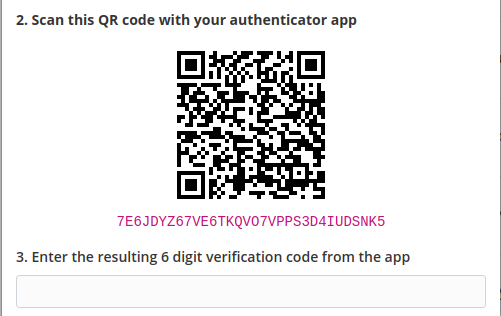

Click the sections below to learn about how to protect your online accounts.
An good password is one that you only use in one place, is long, and is as random as possible. This means is should not include dictionary words, it should have upper and lower case letters, symbols, and generally should be at least 15 characters. Generating random passwords and remembering different passwords for every site where you have an account is impossible. To solve this problem, there are password managers. These are apps that are password protected that store all your other passwords. Because they contain all your other log in credentials, it is extremely important that you properly protect your password manager. This means using a strong, random password that you have never used anywhere else. You can use this site to generate a strong password for your password manager: https://1password.com/password-generator/. I recommend unchecking the "Full Words" box, and replacing at least one of the dashes with a number.
Some people use notes applications or spreadsheets to keep track of their passwords. This is not recommended. Password managers, besides being much easier to use, are much more secure. Password managers are built with security as the primary goal, notes apps and spreadsheets are much easier for hackers to steal using malware or unauthorized access to your online accounts.
Additionally, your password manager should have two factor authentication enabled, see the below section on two factor authentication.
For choice of password manager, I highly recommend 1Password. It is extremely affordable at $2.99 a month for an individual, and $4.99 a month for a family (with up to 5 users). This is the best option in my opinion. If you prefer a free option, (although they also have a paid tier) I would recommend Bitwarden. I would not recommend LastPass due to their history of being breached. Proton and NordVPN both have started password managers. I have not used them, but given the reputation of these companies, they likely are good products. However they are newer products without the same history as Bitwarden and 1Password.
Do not save passwords in Chrome or Firefox, they are trivially easy to steal if your computer is compromised, they are practically stored in plain text on your computer. Additionally, do not save passwords using your Google or Apple account, use a dedicated password manager. Because email addresses can often be used as a backup second authentication method, if someone gains access to your google or apple account, and your passwords are stored there, they likely will have full access to most of your online accounts.
Two Factor Authentication (or 2FA) is a second piece of information required from a user in order to log in to an account. Often these are time-based, meaning a particular two-factor authentication code is only valid for a set period of time. There are four major types of 2FA, listed here in order from worst to best: SMS based, email based, software based, and hardware based.
SMS based 2FA uses a code sent to your phone that usually expires in 5 to 10 minutes. SMS based 2FA is often used by banks, and is vulnerable to SIM swapping, and attack where a criminal takes over a victim's phone number. SIM swaps and compromised passwords are the source of many compromised bank accounts.
Email based 2FA uses codes sent to your email address. A properly secured email account with a strong password and software or hardware based 2FA can be very secure. However, bear in mind that employees of your email service provider can gain access to your emails, and can also sometimes restore email access if you lock yourself out. There have been cases when hackers have called their victim's email service provider pretending to be their victim, and were able to reset the victim's email account password. Using an email provider like Protonmail that is security focused and employs zero knowledge encryption helps mitigate this risk greatly, as employees are less likely to be able or willing to reset an account's password. Using common email providers like Yahoo or Gmail for email based 2FA is not recommended.
Software based 2FA uses a seed code and the time of day to create a six digit code that you enter into a website. Because the seed code is never entered into a website, and is often stored locally or in specially designed, secure applications, this method of 2FA is considered very secure. I highly recommend backing up your 2FA seed codes, however, often when you enable 2FA, the website will provide you with backup codes. In this case, backing up the seed code is not nessisary, add the backup codes to the notes section in your password manager. 1Password and Bitwarden paid tiers provides the option to save 2FA software codes in the app, and the app will generate verification codes. You can also just add the seed code in the notes section for a login as a backup, while using another app to generate verification codes. Regardless, you will also need a 2FA app specifically for your password manager. For a dedicated 2FA app, I would recommend Authy. I would avoid Google and Microsoft Authenticator due to privacy concerns, but if you don't share these concerns these apps also work well.
In the image below you can see a screenshot from enabling 2FA in bitwarden. The QR code would be scanned with an app or a password manager. The alphanumeric code below the QR code is the seed code. If the site did not provide backup codes (bitwarden does), this seed code should be backed up in your password manager or another secure location, such as a thumb drive.
Hardware based 2FA uses a physical security key, often a USB key that you plug into the computer to verify your identity. These are considered the most secure method of 2FA. Yubico Authenticator keys are a great option for hardware based authentication keys. If you use hardware keys, make sure to buy two, and add both keys to each account where you use a hardware key. Then carry one with you, and keep one is a secure location. You don't want to be locked out of all you accounts because you lost your key ring.
If you are interested in learning about 2FA in more detail, check out this article: https://auth0.com/blog/the-working-principles-of-2fa-2-factor-authentication-software/.
Once you have your passwords in a password manager, it is extremely important to maintain access to your password manager. There are multiple ways of doing this. For example, 1Password provides an "emergency kit" with your Secret Key, and your master password (make sure to add your seed code if you have 2FA enabled). With Bitwarden, you can make your own emergency kit by noting your password and 2FA seed or backup code in a text file or on paper. Storing this in a safe place, physically in a locked safe or filing cabinet, or digitally on a thumb drive stored in a locked location or password protected, will let you recover access to your account if you forget your password or if your logged in devices are lost or destroyed. You can also store this information in the password manager of a trusted friend family member. Remember that they can use this information to log into your password manager and access all your accounts. Only give this information to someone you trust absolutely.
If storing your emergency kit digitally, after copying the information to a thumb drive, make sure the file is erased from your computer. This information should not be stored on any device connected to the internet, and it is easy to forget to delete the file after copying to a thumb drive.
If you ever need to recover a 2FA code, all 2FA apps have an option to manually enter the 2FA seed code. Once you enter your backedup seed code, the app will start generating verification codes for the account.
To reiterate, if you use Bitwarden, make sure to enable 2FA. 1Password uses a secret key, so this is less important, but still a good idea. After this is set up, make sure that you have everything you need to log back into your password manager (password, Secret Key if applicable, and 2FA seed code) stored in a safe, secure location offline. If you forget and loose your password manager password, the password manager company will not be able to restore your access or recover your passwords.
The following are the steps to securely set up a Bitwarden account. Setting up 1Password is very similar, and more intuitive, so a step-by-step is not provided for that platform.